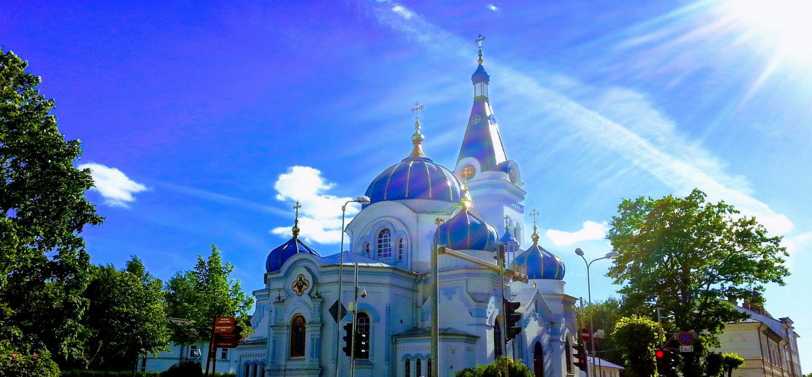

Katedrāles vēstures aizsākumi ir meklējami XVIII gadsimtā, kad pēc nākamās Krievijas imperatores un Pētera I brāļameitas, Kurzemes hercogienes Annas I pavēles Mītavā (Jelgavas vēsturiskais nosaukums) uzcēla nelielu pareizticīgo koka baznīcu,
kas tika iesvētīta Bībeles svēto Simeona Dievsaņēmēja un Annas Pravietes vārdā. Šie svētie iegāja kristietības vēsturē ar to, ka pirmie no jūdiem bija sagaidījuši apsolīto Mesiju un bija satikuši Viņu, Mazuli Kristu, Jeruzālemes Templī
(Kunga Satikšanas svētki). Pirmo pareizticīgo kristiešu baznīcu Mītavā iesvētīja 1726. gadā.
1774.-1780. gados pēc Katrīnas II Lielās pavēles baznīca tika pārbūvēta baroka stilā pēc slavenā imperatores arhitekta Frančesko Bartolomeo Rastrelli projekta.
Savu tagadējo izskatu baznīca ieguva 1892. gadā. Ēkas novecošanās un straujā pareizticīgo kopienas pieauguma dēļ katedrāli atjaunoja: to pārbūvēja un būtiski paplašināja pēc arhitekta Nikolaja Čagina projekta. Krievijas imperators Aleksandrs
III personīgi finansēja būvdarbus.
Nākošo, XX gadsimtu var raksturot kā bēdu un ciešanu laiku baznīcas vēsturē. Baznīca ievērojami cieta Otrā Pasaules kara postījumu dēļ. Pēc kara, padomju varas laikā katedrāle kļuva par valsts īpašumu. Tā netika atjaunota, tās telpās,
kurās nesen kristieši pulcējās liturģijai un lūgšanai, tika aprīkotas ķīmikāliju noliktavas.
Deviņdesmitajos gados katedrāle atgriezās Latvijas Pareizticīgās Baznīcas īpašumā, un pēc Rīgas un visas Latvijas Arhibīskapa Aleksandra svētības tika uzsākti atjaunošanas darbi. Tagad baznīca ir atgriezusies pie dzīves: tika atsākti dievkalpojumi
un Sakramentu pildīšana, izlieti jauni zvani (katedrāles zvanu tornī ir deviņi zvani, lielākais zvans sver 830 kg) atvērta Svētdienas skola bērniem un pieaugušiem, tika sakārtota aktīvā draudzes dzīve.
Sākot no 2016. gada dievnamā atrodas Jelgavas bīskapa, Rīgas eparhijas vikāra Jāņa (Sičevska) katedra. Dievnamā tagad regulāri notiek svinīgie virsgana dievkalpojumi.
2018. gadā ar Jelgavas pašpārvaldes un Eiropas Savienības atbalstu draudze uzsāka vēsturisko sienu gleznojumu atjaunošanu, kuri tika smagi bojāti Otrā Pasaules kara laikā un padomju varas periodā.